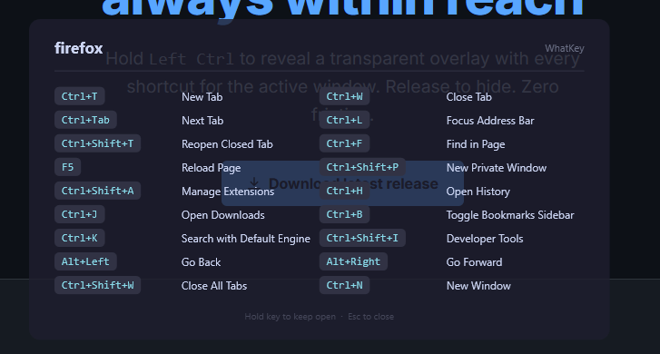

Hold Left Ctrl to reveal a transparent overlay with every shortcut for the active window. Release to hide. Zero friction.
Windows only
Download latest release
docs/images/overlay.png to show the overlay here
Keep the key held for 500 ms (configurable). WhatKey detects the active window automatically.
A transparent, always-on-top panel fades in with every hotkey defined for the current app.
Let go of the key and the overlay fades out — no clicks, no menus, no distractions.
Activate the overlay by holding Left Ctrl (or any key you choose) for a configurable delay.
Pin the overlay with Ctrl+Alt+H — handy when you need to keep shortcuts visible while working.
Separate hotkey lists for every application. Supports multiple process names per entry for app variants.
Add, edit, and remove hotkeys without touching any config file. Changes apply instantly — no restart needed.
Frameless, dark, semi-transparent window that doesn't steal focus or interrupt your workflow.
Runs quietly in the system tray. Access the editor or quit from the right-click context menu.
Free and open-source. No installer required — just unzip and run.
Download from GitHub Releases